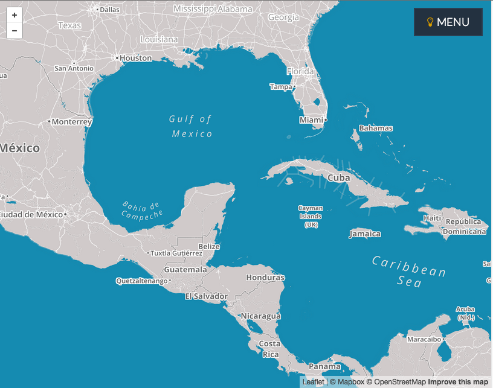
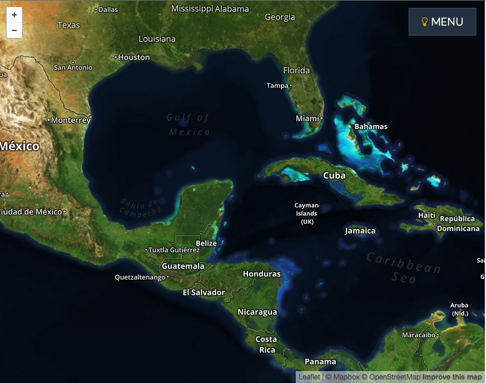
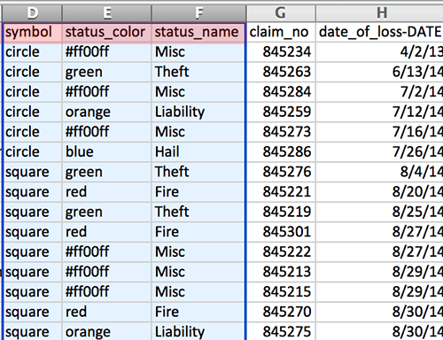
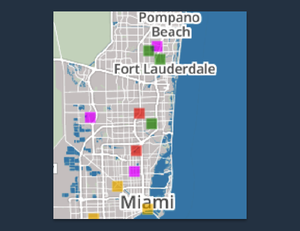
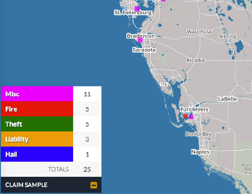
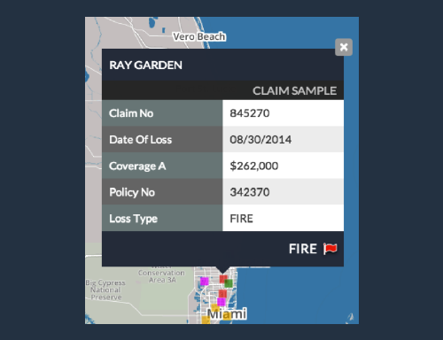
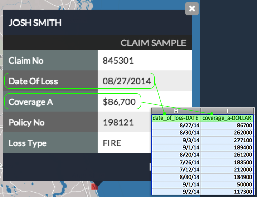

-
Base Maps
You can change the look and feel of the map, by toggling on different base maps, including:
Light

Dark

Terrain
Satellite
Atlas QSG
Click For HelpAtlas Quick Start Guide
-
Creating Feeds
Creating a data feed is as simple as creating and uploading a CSV file. Atlas Viewer uses fields in the CSV to build the map.
-
User-Defined Fields
The CSV can include user-defined fields. Atlas Viewer will display this “metadata” when a user clicks on a map pin.
Clicking on a Pin
Note that field names will be converted to “Title” case when displayed (Atlas Viewer does not, however, automatically reformat the metadata). If the field name has multiple words, separate the words with an underscore. Atlas will replace the underscore with a space when displaying the field name e.g., "date_of_service" would be displayed as "Date of Service").
***** NEEDS ILLUSTRATION *****
-
A Sample CSV
A Sample CSV file is shown below, along with an explanation of the fields that are included in the CSV. You can download the Sample CSV to your computer and use it as a practice feed to upload to Atlas Viewer.
Download Sample CSV HereRequired Map-Building Fields

The Required Fields are highlighted.
Atlas Viewer displays the “name” in the title bar of the info window when a map pin is clicked. “Name” can be anything; it doesn’t have to be an actual name. In this example, the name of the policyholder was used in the “name” field. It could just as easily have been the policy number, the claim number, the address, etc.
Optional Map-Building Fields
The Optional Fields are highlighted.
symbol
The shape of the pins on the map is determined by the “symbol” field. In this example, the pins will be displayed as squares. If the symbol field is left out of the feed, Atlas Viewer will use the default shape for pins (circle).
status_color
Atlas Viewer will color the map pins based on the status_color field. In this example, fire claims will be displayed with a red pin, hail claims will be displayed with a blue pin, liability claims will be displayed with an orange pin, etc. Note that you have unlimited color options. You can use one of the five pre-defined color names (red, blue, green, orange, black), or you can specify the color using hex (e.g., Misc claims will be displayed as magenta in this example).
The look of the pins is determined by the optional “status_color” and “symbol fields”
status_name
The status_name field defines the meaning of the color. Atlas Viewer uses the status_name in the summary legend:
** Caption? **
User-Defined Fields
Atlas Viewer allows you to include optional fields to provide more data about each map point.

User-Defined Fields highlighted.
These optional fields are displayed when you click on a map pin:
Displaying Optional Fields in a Pin
Formatting
The Sample CSV also includes two of the formatting keys:
*?* Relationship between User-Formatted Fields
-
User-Defined Fields
-
Adding Feeds
Atlas will then open a document window so that you can browse through your files. Select the file you wish to upload and click the OPEN button.

Click on the ADD FEED Button
Atlas opens the Feed Name dialogue. You can either keep the same file name or change the name to whatever you'd like.

The FEED NAME Window.
After choosing a name, click the FINISH UPLOAD button. That's all there is to it! Atlas Viewer will map your feed.
-
Sharing Feeds
-
Share Manager
Share Manager is the easy, secure way to let others view your data. When you share a data feed, the viewers can see the mapped data, but can’t update the data or share it with anyone else. You own the data and you control the data.
Click the “Share” icon next to any of your feeds to manage the users who can view the data.

Opening The Share Manager
For users you’ve already invited, you can see when you invited them and the last time they viewed the feed. You can also revoke their access to the data feed.
-
Sending An Invitation
You can send an invitation to anyone who has an email address. Click the “Share” icon to open Share Manager and enter the user’s email address:

Smush this gif & next gif together! *******

Smush with above gif *******
It’s that easy. If they recipient is a registered Atlas Viewer user, your data feed appears automatically in that user’s list of “invited” feeds. If they aren’t a registered user, the invitation includes instructions for registering with Atlas Viewer.
-
Revoking Access
You can revoke a user’s access to your data at any time. When you revoke their access, the feed will be removed from their “invited” feeds and they will no longer be able to see the data.

***** GIF starting with Share Manager already open…GIF shows clicking the Revoke icon, clicking ok, and seeing that the user disappears from Share Manager *****
-
Share Manager
-
Deleting Feeds
Deleting a Feed completely removes that feed from Atlas. The Feed will be deleted from ALL feed lists (including users you’ve invited, as well as your own list of feeds).

Deleting A Feed.